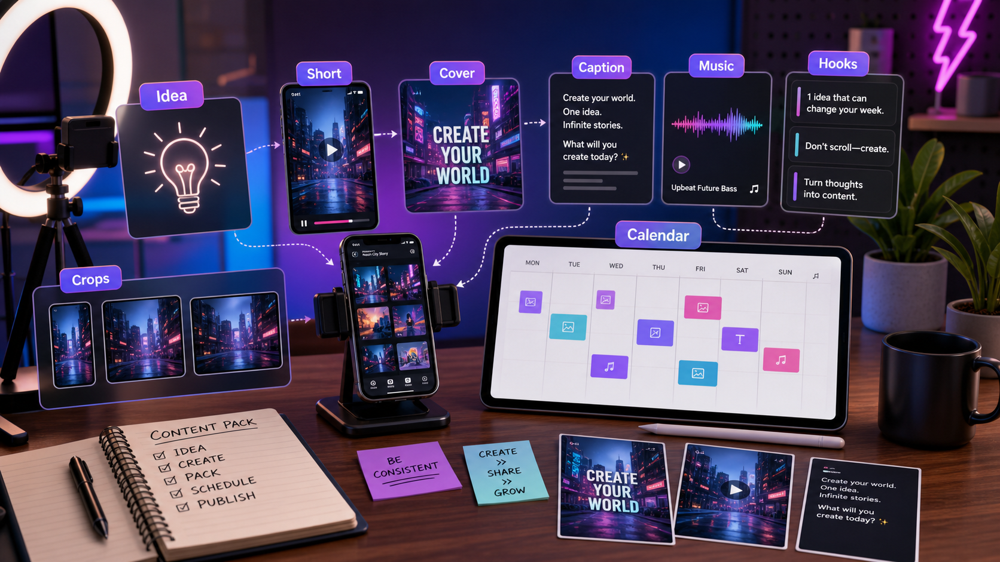

SOCIAL CONTENT WORKFLOW
How creators can build a social content pack with AI.
A single social post rarely wins by itself. Creators need a pack: hook, short video, cover, caption, thumbnail text, music mood, and platform variants. This workflow turns one topic into that complete package.

Summary for fast readers
- A social content pack should include short video, cover, caption, music direction, hook variants, crop notes, and a posting plan.
- The best workflow starts with one clear idea, then creates platform variants without changing the core promise.
- Review each asset for mobile readability, hook speed, audio fit, CTA clarity, and platform rules.
WHY THIS WORKS
A content pack makes posting easier because decisions stay connected.
When the video, cover, caption, and music mood are planned together, the post feels intentional and can be repurposed faster across TikTok, Reels, Shorts, and paid social.
EXAMPLE BRIEF
Start with a real brief, not a vague prompt.
Topic: how creators can plan a week of content in 30 minutes. Audience: solo creators who save ideas but rarely publish them. Desired feeling: relief and momentum. Channels: TikTok, Reels, Shorts, and newsletter teaser.
ASSET PLAN
Build the assets a creator actually needs to publish.
Short video concept
A clear hook, scene idea, and visual rhythm for the main post.
Cover image
A readable visual that makes the promise clear in the feed.
Thumbnail text
Three to five concise phrases for testing first impressions.
Caption set
Short, medium, and story-style captions for different platforms.
Music mood
Audio direction that matches the pace and emotion of the post.
Variant map
A plan for adapting the same idea across channels without starting over.
STEP-BY-STEP WORKFLOW
Turn one topic into a repeatable social system.
- Choose the promise. Write what the viewer gets by watching.
- Write three hooks. Create pain, benefit, and curiosity versions.
- Generate the main video direction. Define opening frame, motion, tone, and final beat.
- Create the cover. Make the promise legible without relying on the caption.
- Write captions around the hook. Keep the caption aligned with the video, not a separate idea.
- Create platform variants. Adjust length, text density, and CTA for TikTok, Reels, Shorts, and paid social.
PROMPTS TO COPY
Use these as starting points, then add your product details.
Create a social content pack for [topic] targeting [audience]. Include three hooks, a short video concept, cover image direction, thumbnail text ideas, caption variants, music mood, and platform-specific notes.
Create a mobile-first cover image for [topic]. Use readable text: ?[headline]?. Visual style: [style]. Keep the layout simple, high contrast, and clear at small size.
Write captions for the same video concept in three styles: direct how-to, personal story, and curiosity-driven. Keep each aligned with the opening hook.
BAD PROMPT VS BETTER PROMPT
Small prompt changes create more usable assets.
| Weak prompt | Better prompt | Why it works |
|---|---|---|
| Make a TikTok about productivity. | Create a social pack for solo creators: ?plan a week of content in 30 minutes.? Include hook, video scene, cover text, caption variants, and music mood. | It defines audience, promise, and deliverables. |
| Give me captions. | Write captions for a video where a creator turns scattered notes into a 7-day content calendar. Include CTA to save and try the workflow. | It anchors the copy to the video scene. |
| Make a thumbnail. | Create cover text options for a video about planning a content week: clear, calm, useful, no hype. | It defines tone and first-impression goal. |
DELIVERY CHECKLIST
Before you publish, check the asset pack.
Hook-to-cover match
The cover and video opening should promise the same thing.
Platform fit
A TikTok caption can be looser; a paid ad variant needs a sharper benefit.
Save value
Ask whether the viewer would save, share, or try the workflow.
Repeatability
The pack should become a template for the next topic.
ACTION PLAN
Your 30-minute social content sprint.
- Minutes 0-5: Write one topic, one audience, one platform, and the emotion the post should create.
- Minutes 5-15: Generate a short video idea, cover direction, caption hooks, music mood, and thumbnail text.
- Minutes 15-25: Create platform variants for TikTok, Reels, Shorts, or feed posts without changing the core idea.
- Minutes 25-30: Choose the post package that has the clearest hook, strongest cover, and easiest caption to publish.
PUBLISHING SYSTEM
Turn one idea into a repeatable weekly content engine.
The goal is not to publish more random posts. The goal is to create a reliable production loop: choose one audience problem, generate a short-form concept, create a cover and caption, adapt the hook for each channel, then track what to repeat next week.
Core asset
One short video with a clear hook, visual payoff, and CTA.
Packaging assets
Cover image, thumbnail text, caption, hashtags, and music mood.
Variants
Alternative hooks, crops, lengths, and ad-style versions for testing.
Review notes
Mobile readability, audio sync, brand tone, and platform-specific limits.
FAQ
Common questions.
What is an AI social content pack?
It is a connected set of channel-ready assets created from one idea: short video, cover image, caption, music direction, hook variants, crops, and publishing notes.
How can creators avoid generic AI content?
Start with a specific audience problem, add personal or product context, keep one clear promise, and review each asset for platform fit before publishing.
Should every platform use the same caption and cover?
No. Keep the core promise consistent, but adapt hook length, crop, cover text, caption tone, and CTA for each platform.
MAKE IT REAL
Practice in ChatArt Pro and build your next post as a complete pack.
Bring one topic you have been meaning to post. Generate the video direction, cover idea, caption hooks, and music mood before the idea goes cold.